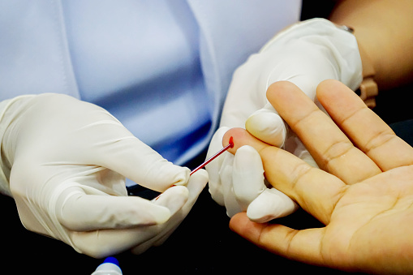

DRUG EDUCATION
Why is drug education important? Understanding the impact of alcohol and other drugs is undoubtedly an invaluable strength. Knowing how drugs impact the body,
the long and short-term effects of substance abuse, and the possible risk factors involved are all key in the prevention strategy.
Research continues to provide substance abuse experts with more material to help educate community members on the dangers of illicit substances and drug misuse.
Life-saving skills can develop from newer, evidence-based research and educational materials.
Drug education is not just for teachers or drug-free advocates and counselors.
Everyone can benefit from the knowledge obtained from addiction researchers and specialists.
It can help create safe and effective treatments as well as reduce the potential for increased substance abuse rates throughout a community.
RESOURCES PROVIDE NEEDED EDUCATION
No one questions the severity of the nationwide drug epidemic and its devastating impact on millions of lives. Alcohol and drugs undermine health and destroy futures, especially among the nation’s youth. To combat rising trends in addiction and addiction overdoses, experts are creating educational programs that use evidence-based training to help inform community members of peer pressure, mental health concerns, prescription drug abuse, prevention strategy, and much more.
The best solution is to reach young people with effective, fact-based drug education—before they start experimenting with drugs. Tweens, teens and young adults who know the facts about drugs are much less likely to start using them. -Drug Free World
The majority of local outreach programs seek to address community violence and drug use by properly educating residents, physicians, law enforcement, educators, and all pillars in the community about the lasting impact of addiction.
WHAT IS DRUG EDUCATION?
Drug education is a general term, but it incorporates several areas of alcohol and other drug recovery. It may refer to:
• Research & development
• Preventive treatment
• Early childhood or in-school education
• Recovery
The term drug education refers to the attempt to inform those living in a community where psychoactive drugs may be widely available and or could have a significant effect on families, politics, and finances. It is used to help teach the effects drugs may have on physical health.
Drug education can be presented in many different formats including:
• Advertising
• Classes
• Open Community Board Meetings
• Employee Assistance Programs
• Hospital and clinical training
• Wellness Coaching
• Research papers
• Infographics
WHY IS DRUG EDUCATION IMPORTANT?
Beyond providing help in substance abuse prevention, drug education is a large proponent of providing safe and healthy resources that promote healthy living. For example, it may raise awareness of community needs, such as a lack of available gyms, lack of proper community health facilities or addiction treatment options, and a lack of safe and healthy recreational activities. Drug education shows what resources may be missing in an affected community and can increase awareness and safety in the community.

IS THERE A NEED FOR DRUG EDUCATION WHILE STRUGGLING WITH ADDICTION?
Yes. Participating in drug education while struggling with addiction is highly important. Several rehabilitation programs and relapse prevention programs use drug education to help inform clients about the severe impact drugs and alcohol have have on their personal and professional lives.
Drug education in rehab facilities develops awareness of possible triggers that may risk current progress toward sobriety. Furthermore, drug education can reduce the potential for relapse as patients can become aware of risky people, places, and situations. It is helpful to avoid such triggers or develop skills to overcome certain relapse triggers. Common triggers may include:
• Bars
• Events
• Boredom
• Finances
• Stress
• Fear of Relapse
Becoming aware of these triggers and how they may personally impact a person suffering from alcohol or other drugs is critical. Triggers will always be present in all communities. Being able to identify triggers decreases the potential to accidentally place one’s self in a risky position that can jeopardize current progress.